Redis
1 概述¶
NoSQL概述¶
NoSQL = Not Only SQL, 非关系型数据库
为什么需要NoSQL？
- High performance 高并发读写(动态页面频繁查询)
- Huge Storage 海量数据的高效率存储和访问
- High Scalability && High Availability 高可扩展性和高可用性
主流的NoSQL数据库： mongoDB, Redis
NoSQL数据库的分类：
- 键值存储：Redis 快速查询，但存储数据缺少结构快
- 列存储： Hbase，快速查询，扩展性强，但功能局限
- 文档数据库MongoDB: 数据格式不严格，但是查询效率不高
- 图形数据库：InfoGrid，
NoSQL的特点：
- 易扩展
- 灵活的数据类型
- 大数据量，高性能
- 高可用
Redis概述¶
Redis is an open source (BSD licensed), in-memory data structure store, used as a database, cache and message broker. It supports data structures such as strings, hashes, lists, sets, sorted sets with range queries, bitmaps, hyperloglogs, geospatial indexes with radius queries and streams.
Redis是REmote DIctionary Server的缩写，以字典结构存储数据，字典中的键值可以有多种类型(字符串、哈希、列表、集合、有序集合)。Redis数据库中的所有数据都存储在内存中，所以性能比基于硬盘存储的数据库(例如MySQL, Oracle)有非常明显的优势。还提供了持久化支持，可以将内存中的数据写入到硬盘中。
Redis还可以用作缓存，可以为每个键设生存时间(到期自动删除)，还可以限定数据占用的最大内存空间(达到空间限制后自动删除不需要的键)
Redis还可以实现任务队列，用列表类型键实现队列，由于支持阻塞式读取，很容易实现一个高性能的优先级队列。
可以在官方网站文档中查询所有的命令。
基本使用¶
安装
在Mac上直接使用redis安装。
brew install redis
启动
启动Redis有多种启动方式：
- 最简启动：
redis-server，适用于开发环境，默认使用6379端口 - 动态参数启动：
redis-server --port 6379，制定特定端口 - 配置文件启动：
redis-server configPath，需要配置以后使用，适用于生产环境
向Redis发送SHUTDOWN命令(redis-cli shutdown)，会断开所有客户端连接，然后根据配置执行持久化，然后退出。
redis-cli是Redis自带的基于命令行的Redis客户端，可以直接通过redis-cli命令启动客户端。
多数据库
Redis中的每个字典都可以理解成一个独立的数据库。Redis默认支持16个数据库，数据库的名字由整数索引标识(从0开始的数字编号)，建立连接以后会自动选择0号数据库，可以通过select database切换数据库(例如select 1选择1号数据库)。它有以下特点：
- 不支持为每个数据库设置访问密码，所以一个客户端要么可以访问全部数据库，要么连一个数据库也不能访问
- 数据库之间并不完全隔离，例如
FLUSHALL命令可以清空所有数据库中过的数据(FLUSHDB只清除当前数据库)
所以，Redis的多数据库更像是一种命名空间，不适宜存储不同应用程序的数据。可以将不同数据库使用不同生产环境、测试环境数据。
Redis的多数据库有点鸡肋，下面是redis作者的观点:
With DB numbers, with a default of a few DBs, we are communication better what this feature is and how can be used I think. I hope that at some point we can drop the multiple DBs support at all, but I think it is probably too late as there is a number of people relying on this feature for their work.
常见可执行文件¶
redis-server: Redis服务器redis-cli: Redis客户端redis-benchmark: 性能基准测试redis-check-aof: AOF文件修复工具redis-check-dump: RDB文件检查工具redis-sentinel： Sentinel服务器
线程模型¶
Redis使用单线程模型，QPS(query per second，每秒查询次数)可以达到十万级，为什么还能这么快呢？
- 纯内存访问：Redis将所有数据放在内存中，内存的响应时间大约为100ns，这是QPS达到每秒万级别的重要基础；
- 非阻塞IO：Redis使用epoll作为I/O多路复用技术的实现，不在网络I/O上浪费过多的时间；
- 单线程：避免了线程切换和竞争产生的消耗；
- 数据结构简单，对数据操作也简单
Redis在处理网络请求时使用单线程模型，并通过IO多路复用来提高并发。Redis内部使用文件事件处理器 file event handler，这个文件事件处理器是单线程的，所以 Redis 才叫做单线程的模型。它采用 IO 多路复用机制同时监听多个 socket ，将产生事件的 socket 压入内存队列中，事件分派器根据 socket 上的事件类型来选择对应的事件处理器进行处理。
2 数据类型¶
Redis支持多种数据结构：字符串string, 哈希hash, 列表list，集合set，有序集合zset。每种数据结构都有自己底层的多种内部实现，Redis会在合适的场景选择合适的内部编码。Redis这样设计有两个好处：第一，可以改进内部编码，而对外的数据结构和命令没有影响，第二，多种内部编码实现可以在不同场景下发挥各自的优势。
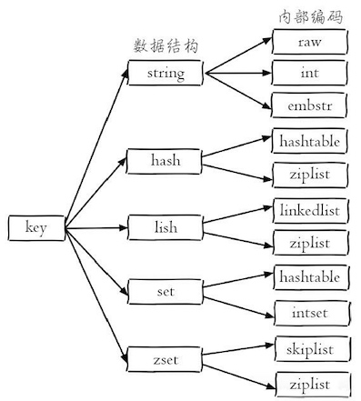
Key定义的注意点：
- 不要过长：最好不要超过1024个字节
- 不要过短：太短不利于阅读，如a
- 统一的命令规范
全局命令¶
有一些全局命令可以应用于所有数据结构：
- 查看所有键：
keys * - 键总数:
dbsize - 检查键是否存在：
exists key - 删除键:
del key [key ...] - 键过期:
expire key seconds - 键类型:
type key
字符串¶
字符串String是Redis最为基础的数据类型，以二进制方式存储，存入和获取的数据相同，字符串类型键允许的最大容量是512M。
关于String常用命令：
- 赋值：
set key value - 多个赋值：
mset key value [key value...] - 取值：
get key - 多次取值：
get key [key...] - 获取key对应的值value并设置新值newValue：
getset key newValue - 删除key：
del key - 指定key的value递增/递减1：
incr key,decr key - 指定key的value递增/递减：
incrby key increment,decrby key decrement - 拼接字符串：
append key value
哈希¶
哈希类型(hash)的键是一种字典结构，存储字段(field)和值(value)之间的映射，字段值只能是字符串。
关于hash的常用命令：
- 设置一个键值对:
hset key field value - 设置多个键值对：
hmset key field value [field value] - 取值:
hget key field - 取多个值:
hmget key field [field ...] - 删除:
hdel key field [field...] - 增加数字:
hincrby key field increment - field是否存在：
hexists key field - 获取field数量：
hlen key - 得到所有fields/values：
hkeys key,hvals key
列表¶
列表类型(list)可以存储一个有序的字符串列表，内部是使用双向列表实现的，所以获取靠近两端的元素速度比较快，但是通过索引访问元素比较慢。
关于list的常用命令
- 链表头部插入数据：
lpush key value1 value2 value3 -
链表尾部插入数据:
rpush key value1 value2 value 3 -
向列表左边插入数据：
lpush key value [value...] - 向列表右边插入数据：
rpush key value [value...] - 从列表左边弹出数据：
lpop key - 从列表右边弹出数据：
rpop key - 获取列表中元素的个数：
llen key - 获取列表片段:
lrange key start stop - 删除列表中前count个值为value的元素:
lrem key count value- 当count大于0时，从列表
左边 开始删除前count个值为value的元素 - 当count大于0时，从列表
右边 开始删除前count个值为value的元素 - 当count等于0时，删除
所有 值为value的元素
- 当count大于0时，从列表
Example
127.0.0.1:6379> lpush list 1 2 3 4
(integer) 5
127.0.0.1:6379> lrange list 0 4
1) "4"
2) "3"
3) "2"
4) "1"
127.0.0.1:6379> lrange list 0 -1 // 支持负数索引
1) "4"
2) "3"
3) "2"
4) "1"
集合¶
集合类型(set)不允许重复成员，在Redis内部是使用值为空的散列表(hash)实现的，所以增删成员、判断某个成员是否存在等常见操作的时间复杂度都是O(1)。
- 增加成员:
sadd key member [member ...] - 删除成员:
srem key mumber [member ...] - 获取所有成员:
smembers key - 判断成员是否在集合中:
sismember key member - 获得集合中成员个数:
scard key - 差集运算：
sdiff key1 key2(获取在key1中存在，在key2中不存在的成员） - 交集运算:
sinter key1 key2(获取在key1和key2中都存在的成员) - 并集运算:
sunion key1 key2(获取key1中和key2中的所有成员) - 进行集合运算并将结果存储：
sdiffstore/sinterstore/sunionstore destination key [key...]
Example
127.0.0.1:6379> sadd set 5 5 5
(integer) 1
127.0.0.1:6379> smembers set
1) "5"
127.0.0.1:6379> sismember set 5
(integer) 1
127.0.0.1:6379> sadd set 3
(integer) 1
127.0.0.1:6379> scard set
(integer) 2
127.0.0.1:6379> sadd setA 1 2 3
(integer) 3
127.0.0.1:6379> sadd setB 2 3 4
(integer) 3
127.0.0.1:6379> sdiff setA setB
1) "1"
127.0.0.1:6379> sinter setA setB
1) "2"
2) "3"
127.0.0.1:6379> sunion setA setB
1) "1"
2) "2"
3) "3"
4) "4"
127.0.0.1:6379> sinterstore setC setA setB
(integer) 2
127.0.0.1:6379> smembers setC
1) "2"
2) "3"
有序集合¶
有序集合sorted-set类型为集合中的每个元素都关联了一个分数，这使得不仅可以完成插入、删除和判断元素是否存在等集合类型支持的操作，还能够获得分数最高或最低的前N个元素、获得指定分数范围内的元素等与分数有关的操作。虽然集合中的元素都不同，但是它们的分数可以相同。
有序集合类型是通过三列表和跳跃表(skip list)实现的，时间复杂度是O(log(N))。
Sorted-Set常用命令：
- 增加元素：
zadd key score member [score member ...] - 获得元素分数:
zscore key member - 获得排名在某个范围的元素列表
zrange key start top [WITHSCORES](按分数从小到大返回从start到stop排名之间的所有元素，withscore参数表示同时获得元素分数)zrevrange key start top [WITHSCORES](按分数从大到小返回)
- 获得指定分数范围的元素：
zrangebyscore key min max [WITHSCORES] [LiMIT offset count]- 按照元素分数从小到大的顺序返回分数在min和max之间的分数(包含min和max)
- [LiMIT offset count]表示在获得的元素列表的基础上向后偏移offset个元素，并且只获取前count个元素
- 如果不包含端点值，可以在分数前加上"("符号
- 可以使用"+inf"表示上限
有序集合演示
127.0.0.1:6379> zadd scoreboard 89 tom 67 jerry 75 peick //添加元素
(integer) 3 // scoreboard中一共有三个元素
127.0.0.1:6379> zscore scoreboard tom // 获取tom的分数
"89"
127.0.0.1:6379> zrange scoreboard 0 1 // 获取最低和次低的分数的人
1) "jerry"
2) "peick"
127.0.0.1:6379> zrange scoreboard 0 1 withscores // 附带分数
1) "jerry"
2) "67"
3) "peick"
4) "75"
127.0.0.1:6379> zrangebyscore scoreboard 80 90 // 获取80-90分之间的人
1) "tom"
// 获得分数⾼于70分的从第⼆个⼈开始的2个⼈
127.0.0.1:6379> zrangebyscore scoreboard 60 +inf limit 1 2
1) "peick"
2) "tom"
3 高级功能¶
事务¶
事务可以一次执行多个命令， 并且带有以下两个重要的保证：
- 事务是一个单独的隔离操作：事务中的所有命令都会序列化、按顺序地执行。事务在执行的过程中，不会被其他客户端发送来的命令请求所打断。
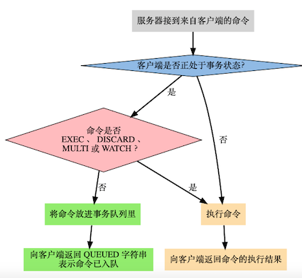
在Redis中，使用multi命令开启事务，客户端向服务器发送的命令被放入事务队列中，直到exec命令提交执行事务。期间可以通过调用discard命令晴空事务队列，并放弃执行事务。事务的返回值是事务中的命令的返回值组成的列表，返回值顺序和命令的顺序相同。
Example
127.0.0.1:6379> multi
OK
127.0.0.1:6379> sadd "user:1:following" 2
QUEUED
127.0.0.1:6379> sadd "user:2:followers" 1
QUEUED
127.0.0.1:6379> exec
1) (integer) 1
2) (integer) 1
值得注意的是，Redis的事务没有关系数据库提供的回滚功能。在使用事务时可能会遇上两种错误：
- 事务在执行
exec之前，入队的命令可能会出错(例如语法错误，参数数量错误) - 命令在
exec调用之后失败(键类型错误)
对于发生在exec执行之前的错误，服务器会对命令入队失败的情况进行记录，并在客户端调用exec命令时，拒绝执行并自动放弃这个事务。对于在exec执行之后的错误，事务中的其他命令仍然会继续执行。
事务发生错误
127.0.0.1:6379> multi // 开启事务
OK
127.0.0.1:6379> set key 1 // 设置键值对key = 1
QUEUED
127.0.0.1:6379> sadd key 2 // 错误，key的类型不是set
QUEUED
127.0.0.1:6379> set key 3 // 更新key对应的值为3
QUEUED
127.0.0.1:6379> exec // 执行事务
1) OK
2) (error) WRONGTYPE Operation against a key holding the wrong kind of value
3) OK
127.0.0.1:6379> get key // 错误后面的命令仍然被执行，key对应的值为3
"3"
慢查询¶
HyperLogLog¶
极小空间完成独立数量统计。
- pfadd key element [element...]: 向hyperloglog添加元素
- pfcount key [key..]: 计算hyperloglog的独立总数
- pfmerge destkey sourcekey [sourcekey...] 合并多个hyperloglog
4 持久化¶
Redis持久化(persistence)是指Redis将数据从内存中以某种形式同步到硬盘中，使得重启后可以根据硬盘中的记录恢复数据。Redis支持RDB(Redis Database File)和AOF(Append Only File)两种持久化方式。
- RDB持久化：默认开启，在指定的时间间隔内，将内存快照写入到磁盘;
- AOF持久化：默认不开启，将执行过后的每一条写命令本身记录下来;
还可以
- 无持久化：通过配置来禁用redis服务器持久化的功能，这时候redis作为一个缓存服务
- 同时使用RDB和AOF：既保证了数据安全，又使得数据备份等操作十分容易。
RDB持久化¶
RDB方式的持久化是通过快照(snapshot)完成的，当符合一定条件时Redis会自动将内存中的所有数据生成一份副本并存储在硬盘上。Redis会在以下几种情况下对数据进行快照：
- 根据配置规则进行自动快照；
- 用户执行SAVE或BGSAVE命令；
- 执行FLUSHALL命令；
- 执行复制(replication)时
RDB方式持久化配置
每当时间M内被更改的键Key的个数大于N时，即自动快照
//file: redis.conf
save 900 1 //每900秒，至少有1个key发生变化，会持久化一次
save 300 10 //每300秒，至少有10个key发生变化，会持久化一次
save 60 10000 //每60秒，至少有10000个key发生变化，会持久化一次
dbfilename dump.rdb //持久化文件名称, 默认dump.rdb
dir: ./ // 持久化文件保存路径，默认./配置文件当前路径
SAVE/BGSAVE命令
执行SAVE命令时，Redis
BGSAVE命令可以在后台
FLUSHALL命令
执行FLUSHALL命令时，Redis会清除数据库中的所有数据。
执行复制时
当设置了主从模式时(见下文)，Redis会在复制初始化时进行自动快照，并将生成的RDB文件发送给从节点
快照执行过程：
- Redis使用fork函数复制一份当前进程的副本；
- 父进程继续接收并处理客户端发来的命令，而子进程开始将内存中的数据写入硬盘中的临时文件；
- 当子进程写入完所有数据后会用该临时文件替换旧的RDB文件，至此一次快照操作完成。
RDB持久化优势：
- 只包含一个文件，方便文件备份。对于灾难恢复而言，RDB是一个非常不错的选择。
- RDB文件是经过压缩的二进制格式，所以占用的空间会小于内存中的数据大小，更利于数据传输。
- 性能最大化，由子进程完成持久化操作
- 相比AOF，大数据集启动效率更高
RDB持久化缺点：如果想保证数据的高可用性，即最大限度的避免数据的丢失，RDB将不是一个很好的选择。当系统在定时持久化之前出现宕机，还未来得及往硬盘写入数据，那数据就丢失了。如果数据相对重要，希望将损失降到最小，则可以使用AOF方式进行持久化。
AOF持久化¶
当使用Redis存储非临时数据时，一般需要打开AOF持久化来降低进程中导致的数据丢失。AOF将Redis执行的每一条写命令追加到硬盘文件中，这一过程显然会降低Redis性能，但是大部分情况下是可以接受的。
// file: redis.conf
appendonly yes //配置AOF持久化是否启用，默认no：不启用
appendfilename "appendonly.aof" //配置AOC持久化文件名称
// 同步策略配置
appendfsync always // 每次执行写入都会执行同步，最安全但是最慢
appendfsync everysec // 每秒执行一次同步操作，兼顾性能和安全
appendfsync no // 不主动进行同步操作，最快单最不安全
// 自动重写
// 当前AOF文件大小超过上一次重写时的文件大小的百分之多少时再次重写
auto-aof-rewrite-percentage 100
auto-aof-rewrite-min-size 64mb // 允许重写的最小AOF文件大小
AOF实现过程：
- 所有的写入命令会追加到aof_buf（缓冲区）中
- AOF缓冲区根据对应的策略向硬盘做同步操作
- 随着AOF文件越来越大，需要定期对AOF文件进行重写，达到压缩的目的
- 当Redis服务器重启时，可以加载AOF文件进行数据恢复。
虽然每次执行更改数据库内容的操作时，AOF都会将命令记录在AOF文件中，但是事实上，由于操作系统的缓存机制，数据进入了系统的硬盘缓存。一般来讲启用AOF持久化的应用都无法容忍硬盘缓存中的数据丢失，所以需要主动要求将缓存内容同步到硬盘中(配置appendfsync参数：always, everysec, no)。
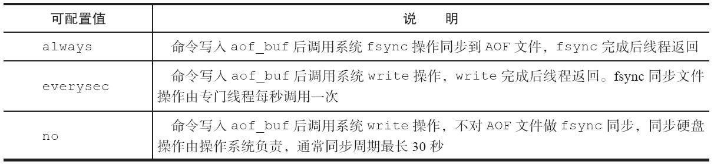
AOF方式持久化优势：
- 带来更高的数据安全性，修改策略可以为每秒同步或每修改同步或不同步
- 对于日志文件写入操作采用追加模式，当写入过程中出现宕机时，不会破坏已经存在的内容
- 如果日志过大，redis会自动启动重写机制
- AOF包含格式清晰、易于理解的日志文件记录所有的修改操作，通过该文件可完成数据重建
AOF方式持久化劣势：
- 对于相同数据集而言，AOF的文件要比RDB的文件大一些
- 根据同步策略的不同，运行效率要低于RDB
重启加载¶
AOF和RDB文件都可以用于服务器重启时的数据恢复。下图表示Redis持久化文件加载流程：
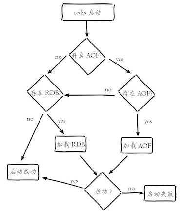
5 客户端¶
Jedis¶
Jedis是Redis官方首选的Java客户端开发包。其Maven依赖是
<dependency>
<groupId>redis.clients</groupId>
<artifactId>jedis</artifactId>
<version>2.10.0</version>
<type>jar</type>
<scope>compile</scope>
</dependency>
Jedis的连接方式有两种，一种是单实例连接，一种是通过连接池连接
/**
* 单实例的测试
*/
@Test
public void demo1() {
// 1. 设置IP地址和端口
Jedis jedis = new Jedis("127.0.0.1", 6379);
// 2. 保存数据
jedis.set("name", "value");
// 3. 获取数据
String value = jedis.get("name");
System.out.println(value);
// 4. 释放资源
jedis.close();
}
/**
* 连接池方式连接
*/
@Test
public void demo2() {
// 获得连接池的配置对象
JedisPoolConfig config = new JedisPoolConfig();
// 设置最大连接数
config.setMaxTotal(30);
// 设置最大空闲连接数
config.setMaxIdle(10);
// 获得连接池
JedisPool jedisPool = new JedisPool(config);
// 获得核心对象
Jedis jedis = null;
try {
// 通过连接池获得连接
jedis = jedisPool.getResource();
// 设置数据
jedis.set("name", "ajx");
// 获取数据
String value = jedis.get("name");
System.out.println(value);
} catch (Exception e) {
e.printStackTrace();
} finally {
// 释放资源
jedis.close();
// 释放连接池
jedisPool.close();
}
}
redis-py¶
redis-py是Redis官方推荐的Python模块
import redis
# 创建连接
r = redis.StrictRedis(host='127.0.0.1', port=6379, db=0)
# 设置数据
r.set('usrname', 'redis')
r.get('usrname')
# HMSET支持将字典作为参数存储，同时HGETALL的返回值也是一个字典，搭配使用十分方便：
r.hmset('dict', {'name':'Bob'})
people = r.hgetall('dict')
# 事物和管道
pipe = r.pipeline()
pipe.set('foo', 'bar')
pipe.get('foo')
result = pipe.execute()
6 复制¶
为了避免单点故障，Redis提供了复制(Replication)功能，可以实现当一台数据库的数据更新后，自动将更新的数据同步到其他数据库上。
在复制的概念中，数据库分为两类，一类是主数据库(master)，另一类是从数据库(slave)。主数据库可以进行读写操作，当写操作导致数据变化时会自动将数据同步给从数据库。从数据库一般是只读的，并接受主数据库同步过来的数据。
一个主数据可以拥有多个从数据库，而一个从数据库只能拥有一个主数据库。
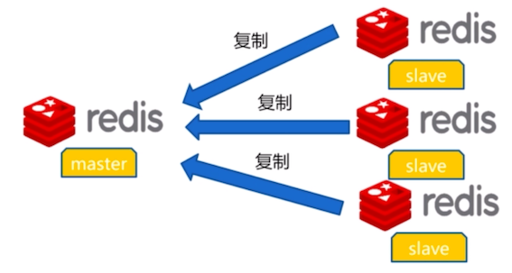
在Redis中使⽤复制功能⾮常容易，只需要在从数据库的配置⽂件中加⼊slaveof 主数据库地址 主数据库端口即可，主数据库⽆需进⾏任何配置。默认情况下，从节点使用slave-read-only=yes配置为只读模式。
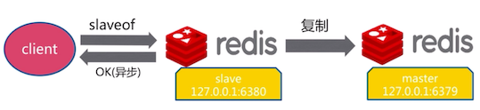
复制
命令方式
redis-6380 > slaveof 127.0.0.1 6379 // 成为127.0.0.1: 6379的从节点，并清除所有数据
OK
redis-6380 > slavef no one // 不当从节点，取消复制
OK
修改配置方式
slaveof ip port // 成为ip:port的从节点
slave-read-only yes // 从节点只做读的操作
| 方式 | 优点 | 缺点 |
|---|---|---|
| 命令 | 无需重启 | 不便于管理 |
| 配置 | 统一配置 | 需要重启 |
复制原理：
当⼀个从数据库启动后，会向主数据库发送SYNC命令。同时主数据库接收到SYNC命令后会开始在后台保存快照(即RDB持久化的过程)，并将保存快照期间接收到的命令缓存起来。当快照完成后，Redis会将快照⽂件和所有缓存的命令发送给从数据库。从数据库收到后，会载⼊快照⽂件并执⾏收到的缓存的命令。以上过程称为复制初始化。复制初始化结束后，主数据库每当收到写命令时就会将命令同步给从数据库，从⽽保证主从数据库数据⼀致。
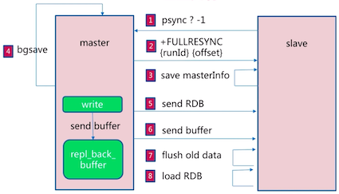
Redis2.8版实现了主从断线重连的情况下的增量复制。
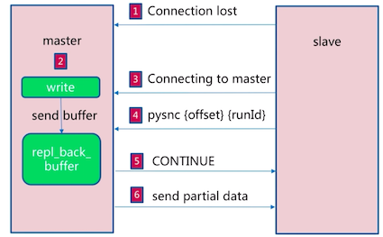
7 哨兵¶
遇到的问题：当主数据库遇到异常中断服务后，开发者只能通过⼿动的⽅式选择⼀个从数据库提升为主数据库，以使得系统能够继续提供服务。
哨兵的作⽤就是实现真正的高可用：
- 故障发现：监控主数据库和从数据库是否正常运⾏；
- 故障转移：主数据库出现故障时⾃动将从数据库转换为主数据库。
可以使用多个哨兵进行监控任务以保证系统足够稳健。此时哨兵不仅会监控主从数据库，而且哨兵之间也会相互监视。
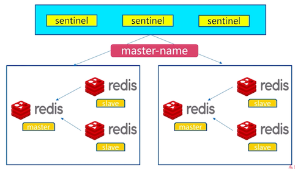
多个sentinel发现并确认master有问题，选举出一个sentinel作为领导，选出一个slave作为master。通知其余slave成为新的master的slave，通知客户端主从变化，等待老的master复活成为新master的slave。
8 集群¶
Redis Cluster是Redis的分布式解决方案，当遇到单机内存、并发、流量等瓶颈时可以采用。Redis集群是Redis提供的分布式数据库⽅案，集群通过分⽚(sharding)来进⾏数据共享，并提供复制和故障转移功能。
数据分布¶
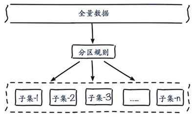
常见的分区规则有哈希分区和顺序分区两种，Redis Cluster采用了哈希分区规则。常见的哈希分区规则有以下几种
节点取余分区¶
- hash(key)%N, 其中key为Redis的键，N为节点数量
- 当节点数量变化时，会导致数据的重新迁移
- 一般采用预分区的方式，提前根据数据量规划好分区数，保证可支撑未来一段时间的数据量，再根据负载情况将表迁移到其他数据库中
- 扩容时通常采用翻倍扩容，避免数据映射全部被打乱导致全量迁移的情况
- 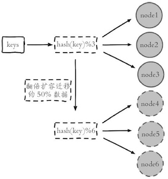
一致性哈希分区¶
一致性哈希(Consistent Hash)是对2^32取模, 将整个哈希值空间组织成一个虚拟的圆环(即哈希环), 整个空间按顺时针方向组织，圆环的正上方的点代表0，0点右侧的第一个点代表1，以此类推，直到2^32-1。步骤如下：
- 确定节点在哈希环的位置：可以选择服务器IP或者主机名作为关键字进行哈希
- 确定数据所在的节点：将数据key使用相同哈希函数，确定在哈希环的位置，随后从此位置沿环顺时针“行走”，第一台遇到的节点就是该数据分配到的节点
- 增加节点：根据上述方法重新确定节点，受影响的数据仅仅是新节点到其环空间中前一台节点(即沿着逆时针方向行走遇到的第一台服务器)之间数据，其它数据也不会受到影响 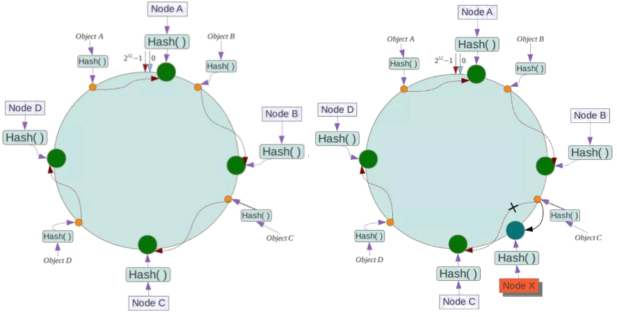
例如，下面一个哈希环的值空间为0-2^32-1，节点Node A, Node B, NodeC根据哈希函数Hash()确定在哈希环上的位置，数据Object A, Object B, Object C使用相同哈希函数确定在哈希环上的位置后，沿着顺时针在哈希环上行走，找到对应的节点分别为A, B, C。如果在系统中增加一台服务器Node X, 此时对象Object A、B、D不受影响，只有对象C需要重定位到新的Node X。
哈希槽分区¶
https://redis.io/topics/cluster-tutorial
Redis Cluser采用哈希槽(Hash Slot)分区，所有的键根据哈希函数映射到0~16383整数槽内，计算公式：slot=CRC16(key) mod 16383。每一个节点负责维护一部分槽以及槽所映射的键值数据。
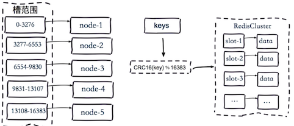
Redis虚拟槽分区的特点：
- 解耦数据和节点之间的关系，简化了节点扩容和收缩难度。
- 节点自身维护槽的映射关系，不需要客户端或者代理服务维护槽分区元数据。
- 支持节点、槽、键之间的映射查询，用于数据路由、在线伸缩等场景。
9 缓存设计¶
缓存穿透¶
缓存穿透是指查询一个一定不存在的数据，由于缓存是不命中时被动写的，并且出于容错考虑，如果从存储层查不到数据则不写入缓存，这将导致这个不存在的数据每次请求都要到存储层去查询，失去了缓存的意义。在流量大时，可能DB就挂掉了，要是有人利用不存在的key频繁攻击我们的应用，这就是漏洞。
有很多种方法可以有效地解决缓存穿透问题，最常见的则是采用布隆过滤器，将所有可能存在的数据哈希到一个足够大的bitmap中，一个一定不存在的数据会被 这个bitmap拦截掉，从而避免了对底层存储系统的查询压力。另外也有一个更为简单粗暴的方法（我们采用的就是这种），如果一个查询返回的数据为空（不管是数 据不存在，还是系统故障），我们仍然把这个空结果进行缓存，但它的过期时间会很短，最长不超过五分钟。
缓存雪崩¶
缓存雪崩是指在我们设置缓存时采用了相同的过期时间，导致缓存在某一时刻同时失效，请求全部转发到DB，DB瞬时压力过重雪崩。
解决方案
缓存失效时的雪崩效应对底层系统的冲击非常可怕。大多数系统设计者考虑用加锁或者队列的方式保证缓存的单线 程（进程）写，从而避免失效时大量的并发请求落到底层存储系统上。这里分享一个简单方案就时讲缓存失效时间分散开，比如我们可以在原有的失效时间基础上增加一个随机值，比如1-5分钟随机，这样每一个缓存的过期时间的重复率就会降低，就很难引发集体失效的事件。
缓存击穿¶
对于一些设置了过期时间的key，如果这些key可能会在某些时间点被超高并发地访问，是一种非常“热点”的数据。这个时候，需要考虑一个问题：缓存被“击穿”的问题，这个和缓存雪崩的区别在于这里针对某一key缓存，前者则是很多key。
缓存在某个时间点过期的时候，恰好在这个时间点对这个Key有大量的并发请求过来，这些请求发现缓存过期一般都会从后端DB加载数据并回设到缓存，这个时候大并发的请求可能会瞬间把后端DB压垮。
10 应用¶
分布式锁¶
https://redis.io/topics/distlock https://martin.kleppmann.com/2016/02/08/how-to-do-distributed-locking.html
分布式队列¶
附录¶
安装¶
原生安装
- 配置开启节点
redis-7000.conf
port 7000
daemonize yes
dir "/opt/redis/data"
logfile "7000.log"
dbfilename "dump-7000.rdb"
cluster-enabled yes
cluster-config-file nodes-7000.conf
cluster-require-full-coverage no
sed 's/7000/7001/g' redis-7000.conf > redis-7001.conf
sed 's/7000/7002/g' redis-7000.conf > redis-7002.conf
sed 's/7000/7003/g' redis-7000.conf > redis-7003.conf
sed 's/7000/7004/g' redis-7000.conf > redis-7004.conf
sed 's/7000/7005/g' redis-7000.conf > redis-7005.conf
启动
redis-server redis-7000.conf
redis-server redis-7001.conf
redis-server redis-7002.conf
redis-server redis-7003.conf
redis-server redis-7004.conf
redis-server redis-7005.conf
meet
redis-cli -p 7000 cluster meet 127.0.0.1 7001
redis-cli -p 7000 cluster meet 127.0.0.1 7002
redis-cli -p 7000 cluster meet 127.0.0.1 7003
redis-cli -p 7000 cluster meet 127.0.0.1 7004
redis-cli -p 7000 cluster meet 127.0.0.1 7005
分配槽
# addslots.sh
start=$1
end=$2
port=$3
for slot in `seq ${start} ${end}`
do
redis-cli -p ${port} cluster addslots ${slot}
done
sh addslots.sh 0 5461 7000
sh addslots.sh 5462 10922 7001
sh addslots.sh 10923 16383 7002
查看集群节点信息
redis-cli -p 7000 cluster nodes
主从配置
redis-cli -p 7003 cluster replicate 0d2758217956aeaa04811e41947cebc4cbfe14ac
redis-cli -p 7004 cluster replicate 7a4bfad8c1dabe99d068e17aefee290ebe600bb7
redis-cli -p 7005 cluster replicate d1a81d3f06e51bbab49e3a4aa9c36cc3d5753a64
使用
redis-cli -c -p 7000
redis-trib.rb安装
安装编译redis
wget http://download.redis.io/releases/redis-3.0.7.tar.gz
tar -zxvf redis-3.0.7.tar.gz -C /usr/local/src/
cd /usr/local/src/redis-3.0.7/
make && make install
安装 ruby-gem
yum -y install ruby rubygems
wget http://rubygems.org/downloads/redis-3.3.0.gem
sudo gem install -l redis-3.3.0.gem
sudo gem list -- check redis gem
通过redis-trib.rb安装集群
# 各个机器上开启redis
redis-server redis-7000.conf
cd src
./redis-trib.rb create --replicas 1 centos1:7000 centos2:7000
centos3:7000 centos4:7000 centos5:7000 centos6:7000
参考资料¶
- 慕课网, Redis入门
- 慕课网, 从入门到高可用分布式实践
- Redis入门指南(第二版)，李子骅
- Redis设计与实现(第二版)，黄健宏
- Redis命令参考
- Redis开发与运维，付磊 张益军